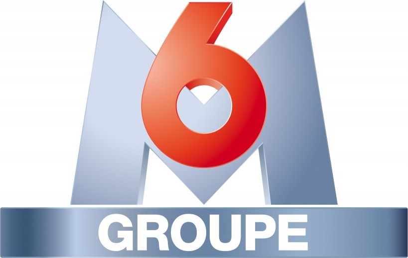

Bienvenue sur mon profil! 🌺

Hello, bienvenue sur mon profil, je suis actuellement à Audencia, et je suis très intéressée par le monde de la publicité, notamment par les nouveaux moyens de communication digitaux. Voici mon CV!
Découvrez mon profil LinkedinEXPERIENCE PROFESSIONNELLE 💻
ASSISTANTE CHARGEE DE CLIENTELE PLURIMEDIA ⪠PUBLICIS MEDIA

- Conseil en stratégie médiatique pour: Nespresso, Maggi, le laboratoire GSK (Voltaren, Sensodyne, Advil,Prorhinel, Polident, Parodontax, Rhinadvil, Nicotinell, Activir)
- Analyse de concurrence sur l'ensemble des comptes de l'équipe et veille concurrentielle
- Analyse des données d'investissement des campagnes publicitaire
- Gestion de l'administration des campagnes publicitaires sur l'ensemble des leviers (Display, TV, Radio)
- Suivi, reporting, optimisation et bilans de campagnes
- Utilisation des outils et des études de media planning afin d'optimiser les actions de communication
- Participation aux recommandations stratégiques des différents clients du portefeuille
ASSISTANTE CHEF DE PRODUIT MARKETING CLIENTS ET SPONSORING ⪠GROUPE M6
- Construction de propositions commerciales de sponsoring des émissions du Groupe
- Création d'argumentaires de vente pour les commerciaux
- Suivi et analyse des indicateurs d'audience et des performances des programmes
- Veille concurrentielle et analyse des stratégies publicitaires des annonceurs
- Suivi, reporting, optimisation et bilans de campagnes
ASSISTANTE COMMERCIALE ⪠TALAOUBRID TRADING GROUP
- Création de devis, Gestion des commandes, Suivi des factures
- En contact avec les représentants commerciaux
- Contribution aux activités marketing avec le développement du site web
EXPERIENCES ASSOCIATIVES 📋
RESPONSABLE LOGISTIQUE ⪠BUREAU DES ELEVES
- Accueil Admissibles: Préparation et organisation de l'accueil de milliers d'étudiants à Nantes
- Membre Actif Pôle Relations Entreprises : Recherche de partenariats, renouvellement de contrats
BENEVOLE ⪠BENEVOLES SANS FRONTIERES
- Réalisation de différentes actions dans l'association afin d'améliorer la communication
- Développement d'un projet entre les personnes âgées en maison de retraite et les enfants au Maroc afin de lever des fonds en partenariat avec le Crédit Mutuel
EDUCATION 👩🏻‍🏫
AUDENCIA BUSINESS SCHOOL ⪠2018 - 2022
- Triple accréditation AMBA, EQUIS et AACSB
- Master en Management, parcours English Track,
- Majeure Marketing Digital
INTEGRALE PREPA ⪠2015 - 2018
- Classes préparatoires HEC
CENTRES D'INTERETS 🏊🏻‍♀️
- Piano
- Pratique de la natation
- Passionnée par les parfums